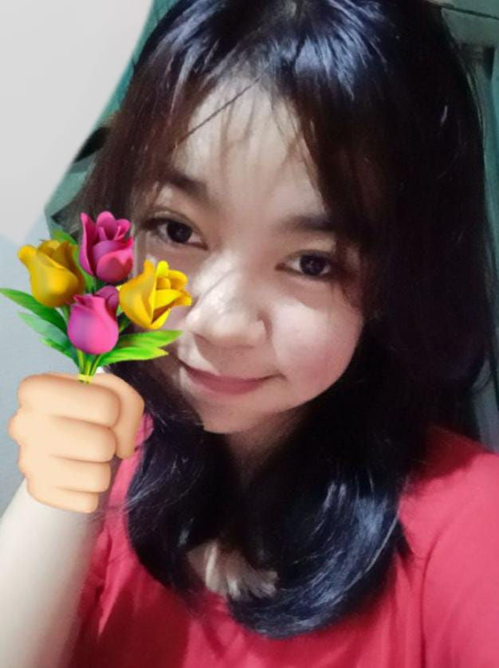
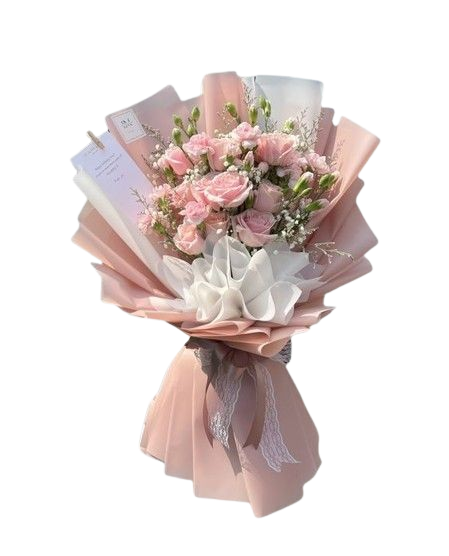

🥺
Pertunjukan Spesial
tap tombol buat mulai cerita
BABAK 1 / 4

sayang, rambut kamu di foto ini jatuhnya niat banget. diagonalnya pas, acaknya cantik, berantakannya malah estetik.

APRESIASI
Terima kasih karena tetap ada.
— Dari kamu, buat Vika